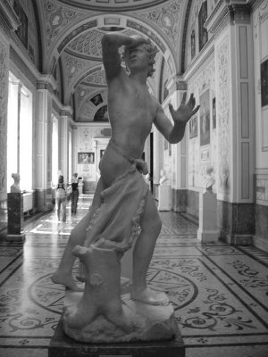

Müzisyen Orfeus'un (Orpheus) sevgilisi Euridike; bir orman gezisi sırasında, kendisiyle tanışmak isteyen bir delikanlının içinden geçenleri hemen sezinledi. Koşaraktan kaçıp kurtulayım derken üstüne bastığı zehirli bir yılanın sokmasıyla da, tanrı Hades'in Ölüler Ülkesi'ne göçüp gitti...
Ne var ki insanlar ve tanrılar tarihinde bir ilk olarak sevgilisi müzisyen Orfeus da, çoğunlukla lirini çala çala, çok tehlikeli serüvenlerden sonra, yeraltındaki Ölüler Ülkesi'ni yöneten karı-koca tanrıların; Persefone (Persephone) ile Hades'in yanına varabildi. O acımasız tanrı Hades'in kaskatı yüreğini biraz olsun ezgileriyle yumuşatabilmek için neler neler döktürmedi ki lirinden! Örneğin sevgilisi Euridike'ye olan tutkusunu dillendirirken, dünya yaşamının güzelliğinden fazla söz etmedi. Çünkü Ölüler Ülkesi'ni kötülemek olurdu bu! Haliyle oranın tanrılarını öfkelendirebilirdi! Ama sevgilisiyle daha yaşayacakları çok şeyler olduğunu dillendirmeye çalıştı. Birlikte yaşayacakları şeyler acı da olsa, onları yaşamak gerektiğini vurguladı liriyle... Orfeus'un ezgilerinden, ölüm tanrısı Hades'in karısı, tanrıça Demeter'in güzel kızı Persefone etkilendi daha çok. Tanrıça Persefone, içinden püskürüp püskürüp gelen o dünyaya yeniden dönüş hasretini zorlukla bastırıyordu onu dinlerken... Çünkü Persefone'nin de bir zamanlar benzer şeyler geçmişti başından!.. Şimdi yanında duran kocası sevimsiz ölüm tanrısı Hades, daha yeni yetmeliğindeyken onu dünyadan kaçırıp getirmişti buralara... Zaten bu yüzden genç yaşında buraya düşen talihsiz Euridike'ye çok acıdı tanrıça Persefone. Çünkü onun müzisyen Orfeus ile dünyada yaşaması gereken aşkları vardı... O yüzden Orfeus'un onu bir süreliğine dünyaya alıp götürme isteğini destekledi ve kocası Hades'i de bu konuda yumuşattı. Böylece iki tanrı, Orfeus'la sevgilisi Euridike'nin birlikte dünyaya dönüşüne izin verdiler. Ne var ki bu dönüş konusunda uyanık tanrı Hades, bazı koşullar öne sürdü. Dünyaya dönerken yanlarında gözlemci olarak kılavuz tanrı Hermes bulunacaktı... İkinci koşul da Ölüler Ülkesi'nden çıkana dek, Orfeus hep önde yürüyecek ve kesinlikle arkasına dönüp sevgilisine bakmayacaktı! Çünkü Yeraltı Dünyası'nın acımasız tanrısı Hades; Baştanrı Zeus'un ricasıyla bile olsa, Ölüler Ülkesi'nden yeniden dünyaya dönüş yolu kolaylaştırılırsa, çorap söküğü gibi bunun arkasının geleceğini çok iyi biliyordu... Her gelen bir yolunu bulup yeniden dünyaya dönecek, sonunda Ölüler Ülkesi'nde pek kimse kalmayacaktı!.. Çünkü oraya gelen bütün ölümlüler, zaten zamanında dünyayı yeterince sevememenin acısı ve oraya bir nefeslik zaman için bile olsa, içlerine bir zıpkın gibi oturmuş yeniden dönüş hasretiyle yanıp tutuşuyorlardı...
Ölüm tanrılarının Ölüler Ülkesi'nden çıkmalarına izin verdikleri Orfeus'la Euridike, kılavuz tanrı Hermes'in eşliğinde dünyaya dönüş yolculuğuna başladılar. Önde Orfeus, arkada sevgilisi Euridike olmak üzere birlikte bulutların üstünde yürüyorlardı artık. Dünyaya doğru gerisin geri başlayan bu dönüş serüveni, tanrılar ve insanlar tarihinde bir ilkti. Yürüyüş boyunca ayaklarını bastıkları yerler ya bulutların üstüydü ya da Ölüler Ülkesi'nin boş karanlıklarıydı. Haliyle ayak seslerinin duyulması da söz konusu değildi!..
Yürüyüş sırasında Orfeus; sevgilisinin ayak seslerini duymamasına karşın, tanrıların sözüne güvenerek onun ardısıra yürüdüğünü düşünüyordu hep. Ne var ki tanrı Hermes'in gözcülüğünde süren bu çok uzun yürüyüş sırasında, zaman zaman arkasına dönüp bakmak gibi karşı konulamaz bir isteğe kapılmıyor da değildi Orfeus! Ama her seferinde de bütün direncini ve istemini kullanıp ardına dönüp bakmadı... Uzun ve zorlu bir yürüyüşten sonra, artık çamurlu ve ürkünç vadilerin boşluklarını, ölülerin arada bir çığlıklarıyla inlettikleri karanlık hava katmanlarını da aşmışlar, cehennemin çıkış kapısındaki o loş aydınlığa ulaşmışlardı. Ama gerçekten de Orfeus o ana dek ardısıra yürüdüğünü düşündüğü Euridike'sinin ayak seslerini hiç mi hiç duymamıştı!.. Bir an tanrıların uyarılarını unutup sevgilisi Euridike'ye dönüp bakmak ve ona sarılmak gibi çılgınca bir isteğe kapıldı ve birden arkasına dönüp bakıverdi!.. Tanrı Hermes de Orfeus'un bu davranışına çok üzüldü. Hatta onun bu hatasını görmezden gelmeyi bile düşündü... Ne var ki bu olanaksızdı artık! Zaten Orfeus arkasına bakar bakmaz sevgilisi Euridike; bir toz bulutuna dönüşüp Ölüler Ülkesi'nin dipsiz karanlıklarına doğru savrularaktan, yeniden gerisingeri dönmeye başlamıştı bile! Bir yandan da Euridike;
"Bu ne çılgınlık böyle, seni beni yok eden?
İşte gene beni geri çağırıyor zalim kader,
Dört yanımı saran gece alıp götürüyor beni; artık elveda!
Gidiyorum gerisingeri,
Uzata uzata ellerimi sana..." diye acı acı çığlıklar atıyordu...
Sis-duman bulutları içindeki Euridike, ölü ruhlarına tutunaraktan yeniden Orfeus'una kavuşmak için geriye dönebilse bile, ne cehennemin kapısındaki dört başlı bekçi köpek Kerberos, ne de onu çevreleyen ırmağın sandalcısı Haron (Kharon) artık ona dünyaya dönüş izni verecekti!..
Orfeus, Ölüler Ülkesi'ni çevreleyen Stiks Irmağı'nın (Styks) kıyılarında, tam dokuz gün dokuz gece, lirinden döktürdüğü ezgilerle tanrılara yalvardı; hep Euridike'sinin dönüşünü bekledi. Gelmeyince de umarsız, dağlara bayırlara vurdu kendini; durmadan yeni yeni şiirler üretti. Çalgısıyla hiç duyulmadık ağıtlar yaktı... Sonra Makedonya'daki Sitrimon Irmağı'nın kıyısındaki havada asılı bir kayanın altına oturup tanrılara ve onların çizdiği acı yazgısına ilençler yağdırdı. Mağaralarda, ağaç gölgelerinde durmadan lirini çalıp ezgiler söyleyerekten tanrı Hades'le tanrıça Persefone'nin cehennemin kapılarını açmasını boş yere bekleyip durdu...

Orfeus
Euridike'si yüzünden yıllarca çektiği bunca acıya karşın dilinden ve çalgısından olağanüstü ezgiler döktürmeyi aralıksız sürdüren Orfeus, gene de güzelliği ve yakışıklılığından fazla bir şey yitirmedi. Trakya bölgesinin en güzel kızları onun ardısıra koşuşup durdular. Ama o hiçbirine yüz gönül vermedi. Hep Euridike dedi; başka bir şey demedi! Gene bu arada şarap tanrısı Diyonisos'un alayındaki Maynad'lar (Mainades'lar) denen güzel kadınlar da vuruldu ona; nereye gittiyse izlediler onu. Orfeus'u ellerine geçirip gönüllerince sevebilmek için her yola başvurdular. Ama bir türlü gönlünü çelemediler onun. Zaten kendilerini çok güzel bulan Maynad'lar, Orfeus'un soğukluğu ve ilgisizliği karşısında haliyle büyük bir eziklik duygusuna kapıldılar. Bu duygu bir süre sonra büyük bir öfkeye dönüştü.. Bu yüzden de Orfeus gene elinde çalgısı; Trakya'daki Hebrus Irmağı kıyılarında yanık yanık Euridike'sine olan aşkını dillendiren ezgiler söylediği bir sırada, ellerindeki taşlarla sopalarla ona saldırdılar. Maynadlar, sopa ve taşlarla hızlarını alamayınca, onu parça parça doğradılar... Parçalarını da Hebrus ırmağına attılar. Orfeus'un sulara kapılan kopuk başı, "Euridike... bahtsız Euridike..." diye başlayan ezgiler döktürüyordu hâlâ! Sular üstünde yol alan liri de; "Euridike... Euridike..." melodisini çalıyordu inleye inleye... Orfeus'un uzuvları, nehrin akıntısıyla Ege Denizi'ne ulaştı. Oradan da bu parçalar, sürüklene sürüklene Midilli adasında karaya vurdular. Trakya bölgesinin her yerinde Orfeus'un ölüsünü arayan teyzeleri güzel esinperileri Musa'lar, bir duyum üzerine Midilli adasına geldiler. Orada onun parçalanmış uzuvlarını bulup bir araya getirdiler ve öylece onu götürüp Trakya'daki Dium kentine gömdüler...
Bu kentteki mezarından başka, tanrı ve tanrıçaların oturduğu Olimpos dağına yakın bir yerde de mezarı vardı Orfeus'un...
Dünyamızda da çok sevilen Orfeus tutkusu, kısa sürede dinsel bir tapınıma dönüştü. Orfeus'un kendisi de tanrı Hades'in yönettiği Ölüler Ülkesi'ndeki Euridike'sine kavuştu. Bu arada teyzeleri olan güzel esinperilerinin tanrı Apollon'a yalvarıları sonunda, onun olağanüstü ezgiler döktüren çalgısı, gökyüzünde bir yıldıza dönüştü...
Bu dönüşümden sonra aradan geçen binyıllar içinde de bütün soylu ozanlar; Akdeniz göklerindeki yıldızların birinden, bazı geceler usul usul, çok dokunaklı ezgiler döküldüğünü duydular.
Ve bütün bu duyduklarını da şiirlerinde, bestelerinde dillendirmeye çalıştılar...